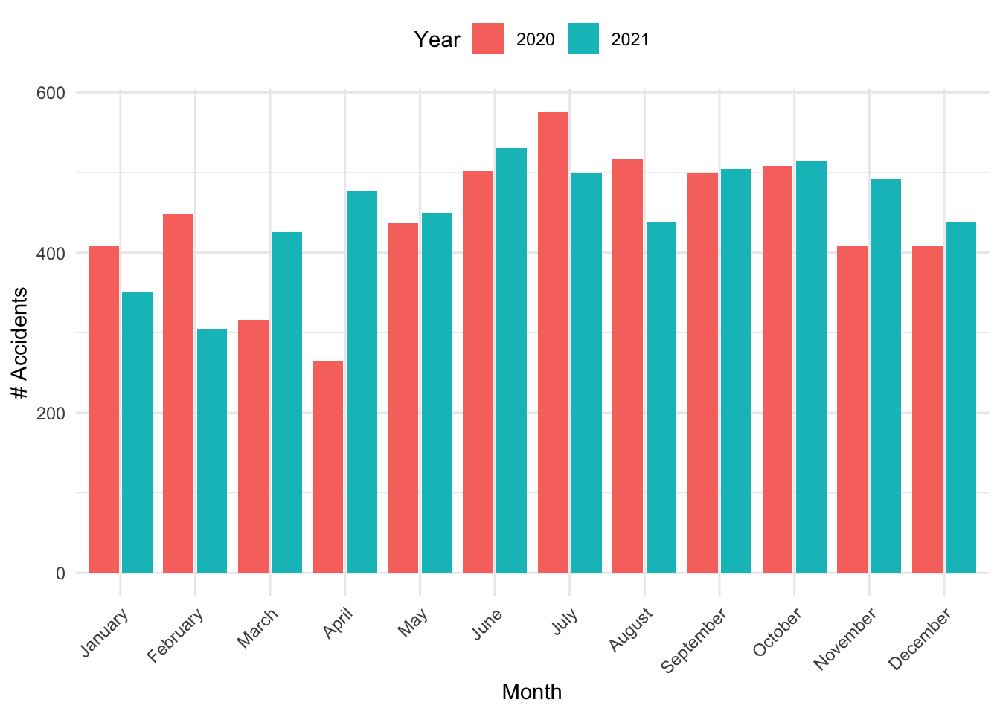
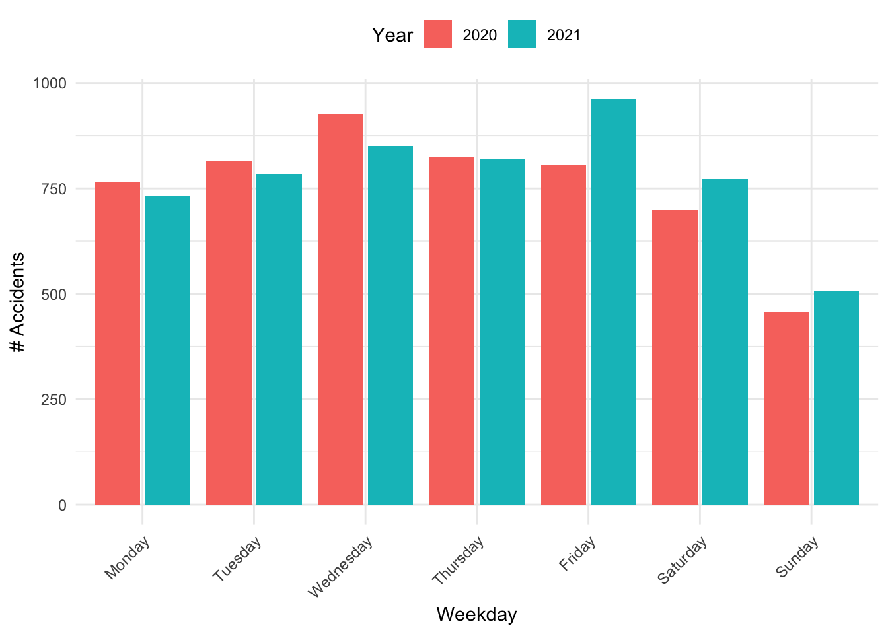

# Set the name of the file we want to import
filename <- "../accidents_2021.csv"
# Read the data file
data <- read.csv(filename, header = TRUE, stringsAsFactors = FALSE)Workshop on Quarto
1 Analysis of traffic accidents
In this section, we will quickly go through an example data set provided by Stadt Zürich (2022) which contains data of traffic accidents in the city of Zurich. In order to keep things simple, we have already pre-processed the data and saved them into csv-files called accidents_2020.csv and accidents_2021.csv, respectively.
1.1 Importing the data
First of all, let’s make sure, we can import the data sets into an R session.
Now that we have imported the data, we can have a look at the variables within the data set. We can do this in two different ways.
First, we could list the names of the variables in the data set by including an inline code chunk. We can achieve this by calling paste(names(data), collapse = ", "). Evaluating this generates the following output: type, severity, pedestrian, bicycle, motorcycle, roadtype, coord_e, coord_n, year, month, month_name, weekday, weekday_name, hour.
However, this does not tell us much yet. It would probably be more helpful to actually see what this data looks like. Using the kable function in combination with the head function, we can generate a table showing the first few observations of the data table.
kable(head(data))| type | severity | pedestrian | bicycle | motorcycle | roadtype | coord_e | coord_n | year | month | month_name | weekday | weekday_name | hour |
|---|---|---|---|---|---|---|---|---|---|---|---|---|---|
| Skidding or self-accident | Light injuries | FALSE | TRUE | FALSE | Minor road | 2683236 | 1249583 | 2020 | 1 | January | 3 | Wednesday | 04h-05h |
| Accident involving pedestrian(s) | Light injuries | TRUE | FALSE | FALSE | Minor road | 2682964 | 1248220 | 2020 | 1 | January | 3 | Wednesday | 05h-06h |
| Overtaking or changing lanes | Property damage | FALSE | TRUE | FALSE | Minor road | 2682811 | 1247444 | 2020 | 1 | January | 3 | Wednesday | 05h-06h |
| Skidding or self-accident | Property damage | FALSE | FALSE | FALSE | Minor road | 2679166 | 1248512 | 2020 | 1 | January | 3 | Wednesday | 12h-13h |
| Parking | Property damage | FALSE | FALSE | FALSE | Minor road | 2682395 | 1248019 | 2020 | 1 | January | 3 | Wednesday | 14h-15h |
| Overtaking or changing lanes | Light injuries | FALSE | TRUE | FALSE | Principal road | 2682015 | 1247207 | 2020 | 1 | January | 3 | Wednesday | 22h-23h |
1.2 Exploratory data analysis
Since the data is now in the form we want it to be, we can start exploring it.
We could for example investigate how many accidents happened per month or per weekday. A visual approach to answer this question is shown in Figure 1. Specifically, Figure 1 (a) shows the number of accidents by month whereas Figure 1 (b) illustrates the number of accidents by weekday.
data %>%
mutate(
month = factor(month.name[month], levels = month.name),
year = factor(year)
) %>%
group_by(month, year) %>%
summarise(accidents = n(), .groups = "drop") %>%
ggplot(aes(x = month, y = accidents, fill = year)) +
geom_col(position = position_dodge2()) +
theme_minimal() +
labs(x = "Month", y = "# Accidents", fill = "Year") +
theme(
legend.position = "top",
axis.text.x = element_text(angle = 45, hjust = 1)
)
data %>%
mutate(
weekday_name = factor(
weekday_name,
levels = c(
"Monday", "Tuesday", "Wednesday",
"Thursday", "Friday", "Saturday", "Sunday"
)
)
) %>%
group_by(weekday_name, year) %>%
summarise(accidents = n(), .groups = "drop") %>%
ggplot(aes(x = weekday_name, y = accidents, fill = as.factor(year))) +
geom_col(position = position_dodge2()) +
theme_minimal() +
labs(x = "Weekday", y = "# Accidents", fill = "Year") +
theme(
legend.position = "top",
axis.text.x = element_text(angle = 45, hjust = 1)
)

It is generally good practice to include details of your session in the document because it contains information about the computing environment. This is important, because software changes over time and the analysis, thus, might not run anymore with future versions. With this information, it is possible to set up an environment with the exact same software versions that the analysis was run in, which, in the end, increases the reproducibility of the results.
sessionInfo()R version 4.2.2 (2022-10-31)
Platform: x86_64-apple-darwin17.0 (64-bit)
Running under: macOS Big Sur ... 10.16
Matrix products: default
BLAS: /Library/Frameworks/R.framework/Versions/4.2/Resources/lib/libRblas.0.dylib
LAPACK: /Library/Frameworks/R.framework/Versions/4.2/Resources/lib/libRlapack.dylib
locale:
[1] en_US.UTF-8/UTF-8/en_US.UTF-8/C/en_US.UTF-8/en_US.UTF-8
attached base packages:
[1] stats graphics grDevices utils datasets methods base
other attached packages:
[1] dplyr_1.1.0 ggplot2_3.4.0 knitr_1.42
loaded via a namespace (and not attached):
[1] magrittr_2.0.3 tidyselect_1.2.0 munsell_0.5.0 colorspace_2.1-0
[5] R6_2.5.1 rlang_1.0.6 fastmap_1.1.0 fansi_1.0.4
[9] tools_4.2.2 grid_4.2.2 gtable_0.3.1 xfun_0.36
[13] utf8_1.2.2 cli_3.6.0 withr_2.5.0 htmltools_0.5.4
[17] yaml_2.3.7 digest_0.6.31 tibble_3.1.8 lifecycle_1.0.3
[21] farver_2.1.1 htmlwidgets_1.6.1 vctrs_0.5.2 glue_1.6.2
[25] evaluate_0.20 rmarkdown_2.20 labeling_0.4.2 compiler_4.2.2
[29] pillar_1.8.1 generics_0.1.3 scales_1.2.1 jsonlite_1.8.4
[33] pkgconfig_2.0.3 References
Stadt Zürich. 2022. “Polizeilich registrierte Verkehrsunfälle auf dem Stadtgebiet Zürich seit 2011 [data set].” https://data.stadt-zuerich.ch/dataset/sid_dav_strassenverkehrsunfallorte.